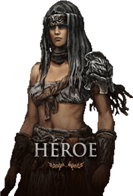
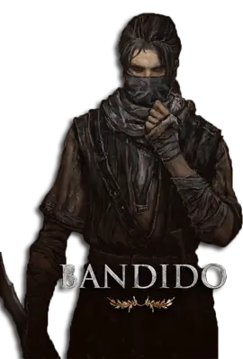
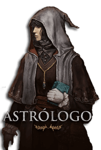
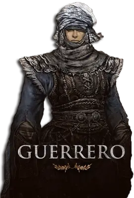
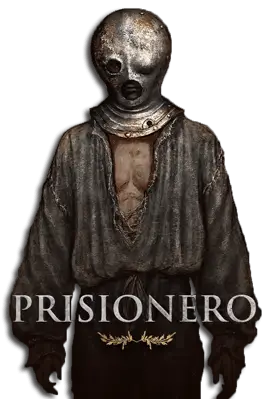
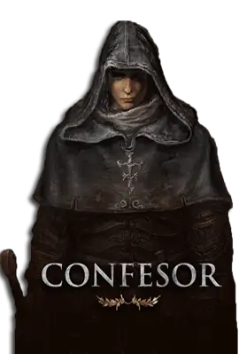
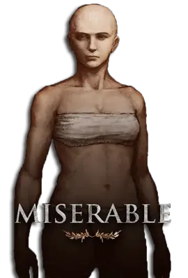
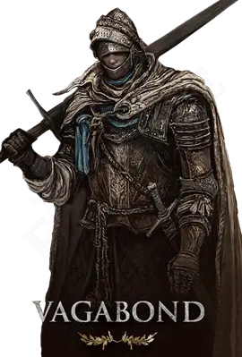
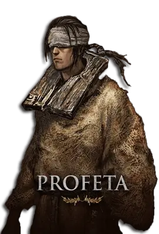
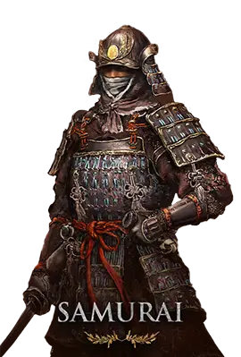

Clases
Las clases en Elden Ring sirven como arquetipos iniciales que están disponibles para los jugadores. Todas las clases en Elden Ring siguen un concepto similar al visto en la saga Dark Souls, de forma que una clase determina el Equipamiento y Estadísticas iniciales, que más tarde podrán ser mejoradas a medida que se progresa en el juego.
Durante la fase de creación del personaje, los jugadores podrán elegir un Recuerdo que proporcionan más opciones de personalización en las fases tempranas del juego:
-

Heroe
El Héroe comienza con mucha Fuerza y Vigor y un poco de Arcano. Parte del nivel 7 y está equipado con un hacha de batalla y un escudo de piel.
-

Bandido
El Bandido comienza con mucho Arcano y Destreza. Parte del nivel 5 y está equipado con una daga, una rodela para desvíos, arco corto y flechas.
-

Astrologo
El Astrólogo comienza con mucha Sabiduría, Mente y un poco de Destreza. Parte del nivel 6 y está equipado con un báculo y una espada y escudo pequeños.
-

Guerrero
El Guerrero comienza con mucha Destreza y una media del resto de estadísticas físicas. Parte del nivel 8 y está equipado con dos cimitarras y un escudo ligero.
-

Prisionero
El Prisionero comienza con mucha Sabiduría y Destreza y una media en el resto de estadísticas físicas. Parte del nivel 9 y está equipado con un estoque, un báculo y un escudo.
-

Confesor
El Confesor comienza con muchaFe y una media del resto de estadísticas físicas. Parte del nivel 10 y está equipado con una espada ancha, un escudo de lágrima y un sello.
-

Miserable
El Miserable parte del nivel 1 con 10 en todas las estadísticas y tan solo una porra como arma. Es la clase más débil con la que comenzar en Elden Ring, y solo deberían elegirla los jugadores más experimentados que quieran enfrentarse a un reto en las fases tempranas del juego
-

Vagante
El Vagante comienza con mucha Fuerza, Vigor y Destreza. Parte del nivel 9 y está equipado con una espada, un escudo y una alabarda.
-

Profeta
El Profeta comienza con mucha Fe y Mente y algo de Fuerza y Arcano.
-

Samurai
El Samurái comienza con mucha Destreza y una media equilibrada en Fuerza, Aguante y Mente. Parte del nivel 9 y está equipado con una katana, un arco largo y flechas (¡incluidas flechas de fuego!)
Participa por una edicion Coleccionista
Completa la siguiente información para tener la oportunidad de ganar una edición coleccionista del juego, que incluye una estatua exclusiva y otros premios increíbles